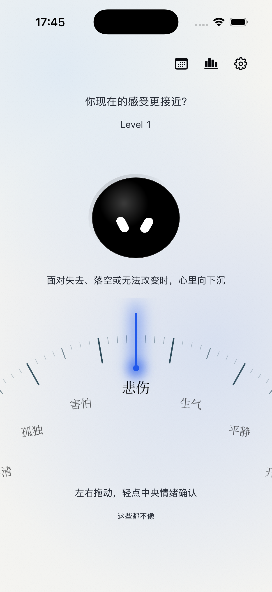
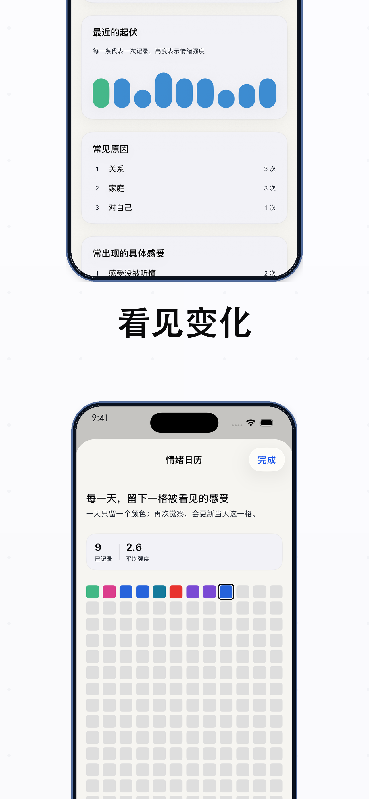
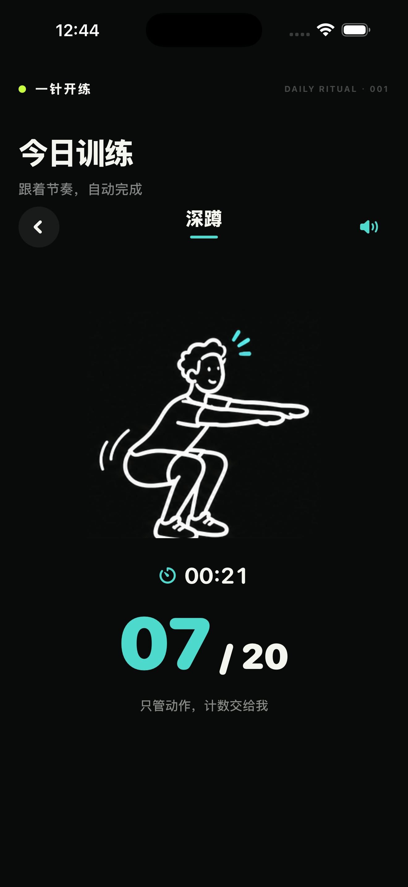
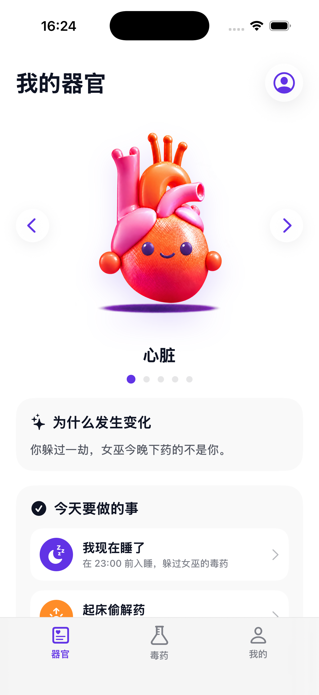
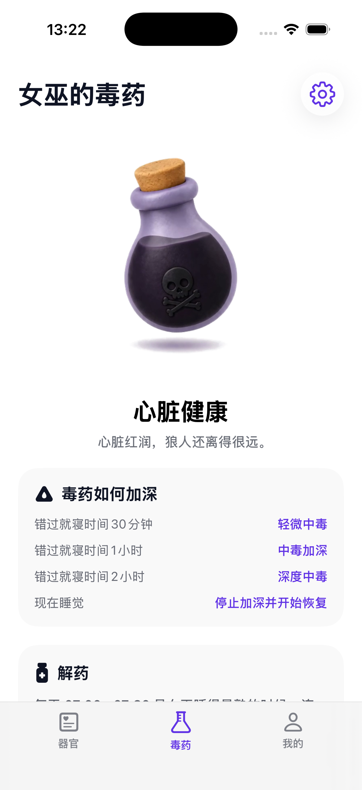

情绪命名 / App 实际界面

01我是孙勃帆，独立开发者。
关注情绪、行动与习惯，用产品设计和 AI 辅助开发，
把生活里的具体问题做成可使用的 App 与体验。

01独立产品设计与 AI 辅助开发
有时知道自己“不太好”，却很难直接写下原因。面对空白日记，用户需要先组织语言，才能开始记录。
将自由表达拆成三次渐进选择，四级词汇合并到三级，控制选择负担。强度和来源放在同一页，让一次记录更连贯。
完成情绪树、刻度交互、强度与来源、日历统计的记录流程；1.0 已上架。后续版本加入英文资源与新图标，持续迭代细节。
观察用户在哪一层退出、能否找到贴近自己的词，以及记录后是否会回看日历。周报与月报作为后续方向。

 02
02独立产品设计与 AI 辅助开发
想运动不一定等于愿意先制定计划。复杂的目标、课程和记录，可能让“开始”本身变成一道门槛。
围绕“一组动作”设计最小体验，用虚拟注入形成启动仪式；训练按节奏计数或计时，减少中途操作。针管仅是交互隐喻。
完成四种训练状态、动作选择、倒计时、跟练与完成打卡流程；支持本地日历、训练参数、音乐及震动设置，形成原生 iOS 产品。
关注从首页到开始第一组的转化、单组完成率，以及完成后是否愿意再来一组。用这些反馈判断仪式是否真正帮助启动。


03独立产品设计与 AI 辅助开发
一条“早点睡”的通知很容易被忽略。睡前拖延时，抽象的提醒需要变成更容易感知、也更愿意回应的反馈。
用故事和角色状态表达时间变化，通过“我睡了”和起床打卡形成反馈。使用手动记录作为输入，器官变化是游戏化表达，不代表健康检测。
实现 App 与桌面小组件、时间驱动的状态逻辑、共享记录、本地通知和睡眠打卡；探索五种器官角色及动效表达。
验证用户是否理解角色状态、是否愿意主动打卡，以及提醒会带来陪伴感还是压力。根据反馈调整故事语气与提醒强度。

独立创作 · 叙事体验探索
尝试将一个抽象的世界观，落实到角色、任务与状态变化中，让观看者从画面和节奏中理解设定。
以短片作为当前方案的载体，优先呈现场景氛围与流程节奏，便于后续继续判断设定是否清晰、是否有继续体验的意愿。
完成一支可播放的项目演示视频，呈现当前的视觉与交互叙事探索。
通过观看反馈确认角色、任务与核心设定是否容易理解，再决定是否扩展为更完整的可交互原型。
说不清情绪、迟迟不开始运动、睡前不愿放下手机。先把问题缩小到可设计的场景。
刻度、启动仪式和角色反馈，各自服务于表达、行动与习惯，围绕核心流程做取舍。
结合 AI 辅助开发与视觉制作，完成原型、原生实现和体验检查；用真实反馈决定下一步。